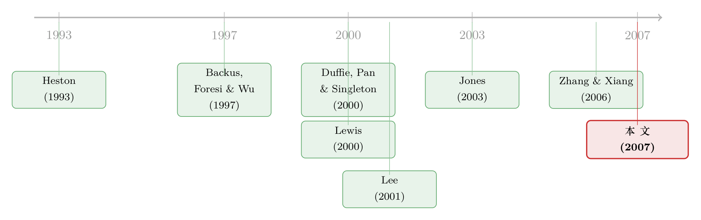

期权“快到期”那一刻，藏着跳跃的指纹
本文读的是 Medvedev & Scaillet (2007, Review of Financial Studies)：他们在一个带跳跃的两因子随机波动率模型下，推导出当到期时间趋于零时隐含波动率的渐进展开式，并由此给出一个不含未观测瞬时波动率的校准公式——于是横跨不同交易日的期权数据可以被一次性"汇总"进同一套校准里。一个反直觉的结论是：跳跃不改变隐含波动率的极限值，却改变了它逼近极限的速度（从 \(\tau\) 变成 \(\sqrt{\tau}\)），而这恰恰可以用来检验跳跃是否存在。
1 引言：一个"既要又要"的老难题
选择一个期权定价模型，几乎永远是一场拉锯：你想要它够灵活，能解释市场上千奇百怪的波动率微笑（implied volatility smile）；又想要它够好算，最好有闭式解，不用每天去解一堆偏微分方程或者跑漫长的蒙特卡洛。
Black–Scholes 公式当然好算，但人尽皆知它解释不了真实的期权价格——波动率微笑就是它脸上抹不掉的那道裂痕。于是过去三十年，人们往里加了两样东西：随机波动率（stochastic volatility）和跳跃（jumps）。今天业界最常用的那一类——仿射跳跃扩散 (affine jump-diffusion)，由 Duffie, Pan & Singleton (2000) 奠定——之所以流行，正是因为它能给出闭式期权价格。代价呢？它必须接受很强的参数约束：方差走一个平方根过程（即 Heston (1993) 的设定），跳跃强度被规定成方差的线性函数。
问题是，这套"为了好算而强加的约束"，在实证里站不太住。Jones (2003)、Aït-Sahalia & Kimmel (2004) 一旦把模型放宽到更一般的恒定弹性方差 (constant elasticity of variance, CEV) 设定，平方根过程（Heston）就被数据拒绝了。
那么，有没有办法既不被仿射约束绑住，又不必硬解 PDE？本文的答案是：别去碰整条期限结构，先把镜头怼到"快到期"那一端。当到期时间 \(\tau = T-t\) 很小时，隐含波动率会呈现出极其规整的渐进行为——规整到可以写成一个闭式展开。这条路，Lewis (2000)（假设小的波动率之波动率）和 Lee (2001)（假设波动率缓慢均值回复）都走过，但他们处理的都是没有跳跃的随机波动率。把他们的方法直接搬到跳跃情形，路并不通。本文真正的贡献，就是把这条展开推到了带跳跃的一般情形。
2 先把"价格"翻译成"波动率"的语言
约定一下记号。设股价 \(S\)、到期时间 \(\tau\)、行权价 \(K\)。Black–Scholes 隐含波动率 \(IV(K,T)\) 的定义，就是让 BS 公式算出来的价正好等于市场实际价 \(C(K,T)\) 的那个波动率参数：
$$C_t(K,T) = C^{BS}\big(X_t, K, \tau, IV_t\big)$$
这里有一个关键的中间量——moneyness（价内/价外的程度）：
$$X_t = \log\!\big[S_t\, e^{(r-\delta)\tau}/K\big]$$
作者证明了一件让分析大大简化的事：隐含波动率可以写成一个确定性函数
$$IV_t(K,T) = I(X_t,\tau;\sigma_t)$$
而且 \(I\) 既不依赖无风险利率 \(r\)、也不依赖股息率 \(\delta\)。这意味着只要我们在"波动率"这个尺度上工作，就可以放心地令 \(r=\delta=0\)（在把行权价 \(K\) 换算成 moneyness \(X\) 时再把它们考虑回来即可）。一句话：隐含波动率是被"洗"过的期权价，干净得多。
3 一个看似自然的展开，为什么会"炸"
既然 \(\tau\to0\) 时 \(I\) 有极限——在无跳跃情形下，平价隐含波动率会收敛到瞬时波动率 \(\sigma\)（这是 Ledoit, Santa-Clara & Yan (2002) 早已指出的）——一个再自然不过的想法，就是把 \(I(X,\tau;\sigma)\) 在 \(X=\tau=0\) 处做泰勒展开。
可这里埋着一颗雷：一旦存在跳跃，这个关于 \(X\) 的幂级数就不再良定义了。 函数 \(I\) 在 \(X,\tau\) 很小时不再"乖巧"。
怎么绕过去？这是本文第一个漂亮的技术动作——重新缩放 moneyness。定义一个叫"moneyness degree"的量 \(\theta\)：
$$\theta \equiv \frac{X}{\sigma\sqrt{\tau}}, \qquad \bar I(\theta,\tau;\sigma)\equiv I(\sigma\theta\sqrt{\tau},\,\tau;\,\sigma)$$
为什么是这个缩放？因为在无跳跃模型里，忽略 \(\tau\) 及更高阶项，\(\log(S_T/K)\) 近似服从均值为 \(X_t\)、标准差为 \(\sigma_t\sqrt{\tau}\) 的正态分布。\(\theta\) 正是"均值除以标准差"——它衡量的是这个期权到期时落在价内的可能性。换句话说，\(\theta\) 才是"快到期"语境下天然的 moneyness 标尺。把 \(X=\sigma\theta\sqrt\tau\) 代回去，原本会"炸"的幂级数，就被整理成了一个对 \(\sqrt\tau\) 的良性展开。
4 模型与核心展开
先把舞台搭好。本文用的是一个两因子跳跃扩散随机波动率模型，定价测度下股价与波动率的联合动态为：
$$dS_t = \big[r-\delta-\eta(\sigma_t)\big]S_t\,dt + \sigma_t S_t\,dW_t^{(1)} + S_t\,dJ_t$$
$$d\sigma_t = a(\sigma_t)\,dt + b(\sigma_t)\Big[\rho\,dW_t^{(1)} + \sqrt{1-\rho^2}\;dW_t^{(2)}\Big]$$
其中 \(W^{(1)},W^{(2)}\) 是两个独立标准布朗运动，\(J_t\) 是独立的泊松跳跃过程，\(r,\delta,\rho\) 为常数，期望跳跃幅度 \(E(\Delta J)\) 为常数，而跳跃强度 \(\lambda=\lambda(\sigma_t)\) 可以依赖于波动率；记期望跳跃 \(\eta(\sigma)=\lambda(\sigma)E(\Delta J)\)。这个设定足够一般，能容纳实务里几乎所有常用的参数模型。
注意 \(\rho\) 把波动率的随机性与股价的随机性"绑"在了同一个布朗运动 \(W^{(1)}\) 上——这就是著名的杠杆效应 (leverage effect)。下面会看到，正是这个 \(\rho\)，在一阶项里留下了微笑的斜率。
先看没有跳跃的纯扩散情形（Proposition 1）。作者证明，隐含波动率有如下渐进展开：
其中一阶项是 moneyness degree 的线性函数：
$$I_1(\theta;\sigma) = -\frac{\rho\, b}{2}\,\theta$$
这个式子干净得令人愉悦，而且意味深长：
- 一阶斜率只由相关系数 \(\rho\) 乘以波动率之波动率 \(b\) 决定。当 \(\rho<0\)（杠杆效应），斜率为正，低行权价（深度价外看跌期权）那一端的隐含波动率更高——这正是股指期权那个标志性的"冷笑"（smirk）。（关于这条微笑曲线背后到底是风险还是行为，可参见《为什么从期权里「读」出来的风险厌恶，会咧嘴一笑？》。）
- 更妙的是，波动率的漂移 \(a\) 根本没出现在 \(I_1\) 里，因此一阶项与定价测度的选择无关。直觉很朴素：到期时间足够短，波动率"还没来得及变多少"，所以波动率风险不可能对期权价产生一阶影响。
二阶项 \(I_2(\theta;\sigma)\) 是 \(\theta\) 的二次函数加一个常数，系数里揉进了 \(a,\rho,b\) 以及 \(b\) 的导数 \(b'\)——它刻画的是微笑的曲率。结构虽繁，逻辑是清楚的：一阶给斜率，二阶给弯度。
5 反转：跳跃留下的，是"速度"而非"水平"
现在把跳跃放回来（Proposition 4，先假设跳跃强度为常数）。展开式的形式不变，依旧是 \(\sigma + I_1\sqrt\tau + I_2\tau+\cdots\)，但一阶项里多出了两块跳跃的贡献：
$$I_1(\theta;\sigma) = -\frac{b\rho}{2}\theta - \eta\, g + \mu\, h$$
其中 \(g=N(\theta)/n(\theta)\)，\(h=1/n(\theta)\)（\(n,N\) 是标准正态的密度与分布函数），\(\eta=\lambda E(\Delta J)\) 是总期望跳跃，\(\mu=\lambda E(\Delta J_+)\) 是期望跳跃的正部。
这里有一个乍看相当反直觉的结论：在 \(\tau\to0\)、\(\theta\) 固定时，隐含波动率仍然收敛到瞬时波动率 \(\sigma\)——跳跃成分对极限值毫无贡献。
奇怪吗？很奇怪。因为对小的 \(\tau\)，收益率的方差近似是 \((\sigma^2+\lambda E\Delta J^2)\tau\)，扩散与跳跃两块是同阶的、势均力敌。可一旦换到隐含波动率的语言里，两者的命运就彻底分岔了。作者用一个干净的对比讲透了这件事：
- 纯泊松跳跃模型下，平价看涨期权价格的主导项是 \((\lambda S E\Delta J_+)\tau\)；而纯扩散下，主导项是 \(\big(\sigma S/\sqrt{2\pi}\big)\sqrt\tau\)。
- 这意味着纯跳跃模型下隐含波动率会收敛到零，主导项是 \(\big(\lambda\sqrt{2\pi}\,E\Delta J_+\big)\sqrt\tau\)；而纯扩散下，隐含波动率在极限处等于 \(\sigma\)。
于是真正关键的一句话浮出水面——跳跃改变的不是极限，而是逼近极限的速度。
在纯扩散模型里，平价隐含波动率以 \(\tau\) 的速率收敛到 \(\sigma\)（因为 \(\theta=0\) 时 \(I_1(0)=0\)，\(\sqrt\tau\) 那一项消失了）。可一旦有跳跃，\(\theta=0\) 处 \(I_1(0)=-\eta\,g(0)+\mu\,h(0)\neq0\)，\(\sqrt\tau\) 那一项不再消失——平价隐含波动率改以 \(\sqrt\tau\) 的速率收敛。
这正是检验跳跃的一把利器。Carr & Wu (2003a) 在研究期权价格的短期行为时指出，用平价期权价格无法检测跳跃（除非是纯跳跃情形）；而本文的 Proposition 4 说明，换成平价隐含波动率就能做到——你只需看它逼近瞬时波动率的速度，是 \(\tau\) 还是 \(\sqrt\tau\)。
在更一般的情形（Proposition 5，强度与跳跃分布都依赖于 \(\sigma\)），\(I_1\) 与上面相同，只是二阶项要做一个修正：\(\big[I_2(\theta;\sigma)-\tfrac12\rho b\,\eta'\big]\tau\)，\(\eta'\) 是期望跳跃 \(\eta\) 对 \(\sigma\) 的导数。跳跃强度随波动率变化的那部分信息，是从二阶项漏出来的。
6 真正关键的一步：把"看不见的"换成"看得见的"
到这里，理论很漂亮，但有一个实务上的拦路虎：展开式 (18) 里含着未观测的瞬时波动率 \(\sigma\)，而它每天都在变。结果就是，这个公式只能逐日校准——而逐日校准需要每天都有足够多的短期期权报价。可现实里常常做不到，比如 S&P 500 期权一个月才发行一次。
本文最实用的一招在此登场：用一个能观测到的隐含波动率，替换掉看不见的瞬时波动率。
具体地，设我们观测到某个 \(\tau\) 下的平价隐含波动率 \(\hat\sigma=I(0,\tau;\sigma)\)。定义一个"修正的 moneyness degree"，把分母里看不见的 \(\sigma\) 换成看得见的 \(\hat\sigma\)：
$$\hat\theta \equiv \frac{X}{\hat\sigma\sqrt{\tau}}$$
接着，对 \(\hat\sigma=I(0,\tau;\sigma)\) 的渐进式做反演，把瞬时波动率写成 \(\sigma=\sigma(\tau,\hat\sigma)\) 的形式，再代回展开式。Proposition 6 由此给出一个修正后的隐含波动率函数 \(\hat I(\hat\theta,\tau;\hat\sigma)\)——它完全不含任何隐变量。
这一步的意义怎么强调都不为过。因为公式里不再有那个"每天都在变"的 \(\sigma\)，它就可以被用来对模型 (1) 的任意参数设定，把横跨不同交易日的期权价格一次性、同时校准——也就是说，我们能在一步里同时拟合波动率微笑及其动态。
天下当然没有免费的午餐。代价是：波动率漂移 \(a\) 从公式里消失了，无法再从数据里识别出来。但作者诚实地指出，这个损失是合理的——反正在我们的近似所适用的那批短到期期权上，波动率漂移本来也无法被充分识别。
由于近似只对近平价 (near-the-money) 期权才准，作者进一步对 \(\hat I\) 里那些高度非线性的函数 \(g(\theta)\)、\(h(\theta)\) 在 \(\theta=0\) 处再做一次二次展开，以避免远离平价时的大数值误差。Zhang & Xiang (2006) 也用过类似的二次近似，但他们建立的是隐含波动率与风险中性密度的关系，没法从期权价反推出状态变量模型的设定，也无法摆脱逐日校准——这正是本文方法的两点不同。（从期权价格里"读"出风险中性分布这条路，另见《把概率从期权价格里「凭空」捞出来》。）
7 数据与实证：跳跃显著，平方根过程出局
作者把这套方法用到一组 S&P 500 期权价格上做校准，得到三个结论：
- 跳跃是显著的——这一点和正文反复呼应。
- 数据支持波动率之波动率的 CEV 设定，而拒绝仿射（平方根 / Heston）设定。
- 数据支持跳跃强度的仿射设定。
值得玩味的是，这些结论与既有文献高度一致——Jones (2003)、Aït-Sahalia & Kimmel (2004) 倾向于拒绝波动率的仿射设定；Bakshi, Cao & Chen (1997)、Bates (2000a) 主张在收益率里引入跳跃——但本文是用一套完全不同的方法得到了它们。从短期渐进出发，绕开了 PDE 与蒙特卡洛，却抵达了同一个结论。
8 文献脉络
把这条线索捋一捋。源头是两条平行的支流：一条是 Heston (1993) 的闭式随机波动率解，后来被 Duffie, Pan & Singleton (2000) 收编进仿射跳跃扩散的统一框架——这是"为好算而牺牲灵活"的代表。另一条则是短期渐进展开：Lewis (2000) 在小的波动率之波动率假设下、Lee (2001) 在缓慢均值回复假设下，分别推出了隐含波动率的渐进式；Fouque, Papanicolaou & Sircar (2000) 走的是快速均值回复；Hagan et al. (2002) 给出了 CEV 型模型下的 SABR 近似。

还有第三条更"无模型"的支流：Backus, Foresi & Wu (1997) 和 Zhang & Xiang (2006) 用密度函数的渐进、假设二次型微笑，建立了收益率分布与隐含波动率之间的关系——好处是不依赖模型设定，坏处是反推不出状态变量过程的动态。
本文恰好坐在这三条支流的交汇处：它继承了 Lewis–Lee 的渐进精神，却把它推广到带跳跃的一般情形（这是前人没做到的）；它又像 Zhang–Xiang 一样追求模型无关的可校准性，却能进一步复原出状态变量模型、并捕捉微笑动态里的信息。同时，它的实证结论（拒绝仿射波动率、肯定跳跃）又呼应了 Jones (2003)、Aït-Sahalia & Kimmel (2004) 这一路的发现。
评论与延伸（Q&A + 研究方向）
(a) 几个可能的疑问
Q：为什么跳跃不改变隐含波动率的极限，却改变收敛速度？这不矛盾吗？
不矛盾。极限值由"\(\tau\to0\) 时方差的主导行为"决定，而扩散方差 \(\sigma^2\tau\) 与跳跃的二阶矩贡献虽然同阶，但跳跃带来的是离散的、肥尾的分布形变。在 BS 这把"只认正态扩散"的尺子下，跳跃无法体现在零阶（极限）的 \(\sigma\) 上，只能从 \(\sqrt\tau\) 这一阶"漏"出来。所以极限相同、速度不同。
Q：moneyness degree \(\theta=X/(\sigma\sqrt\tau)\) 和实务里常用的"标准化 moneyness"是一回事吗？
本质相同，但有微妙差别。实证文献（如 Bates (2000a)、Carr & Wu (2003b)）常用平价隐含波动率或平均波动率来做分母；本文一阶理论用的是瞬时波动率 \(\sigma\)。而第 6 节的校准公式正是把分母换成可观测的 \(\hat\sigma\)，从而既保留了 \(\theta\) 的几何含义，又摆脱了隐变量。
Q：既然丢掉了波动率漂移 \(a\)，这套校准是不是少了重要信息？
作者的辩护是诚实且站得住的：在短到期期权上，\(a\) 本来就无法被充分识别——波动率"没时间变",漂移的影响是高阶小量。所以丢掉的是一个本就识别不出来的参数，换来的是跨日期汇总数据的能力。这是一笔划算的交易。
Q：用 \(\hat\sigma\) 替换 \(\sigma\)，会不会把测量误差带进校准？
会，这正是该方法的软肋。\(\hat\sigma\) 是观测到的平价隐含波动率，本身含报价噪声；反演与代回会把这层噪声传导进结果。作者用近平价 + 二次展开来压住高度非线性函数 \(g,h\) 的数值放大，但近似只在近平价、短到期那一小片区域才可靠。
Q：和仿射模型相比，本文方法的边界在哪里？
仿射模型给的是全期限的闭式价，本文只对短到期准。两者是互补而非替代：要给长期期权定价，仿射或数值方法仍不可少；要快速、稳健地校准短端微笑并检验跳跃/CEV 设定，本文的展开更轻便。
Q：这套方法能识别风险中性分布吗？
部分能。它比 Zhang–Xiang 那类"只到分布层面"的方法更进一步——能复原出状态变量过程的设定（CEV、仿射强度等）。但它牺牲了波动率漂移，所以无法刻画波动率本身在物理测度下的长期动态。
(b) 几个可能的研究问题与提案
1. 把"\(\sqrt\tau\) vs \(\tau\)"的收敛速度做成一个正式的跳跃检验。 【经济故事】本文已经在理论上指出平价隐含波动率的收敛速率能区分跳跃，但论文重心在校准，没把它做成一个有显式临界值、有限样本表现可控的统计检验。 【可行性】高。用 OptionMetrics 的短到期 SPX 期权，按到期日分桶，估计 ATM 隐含波动率对 \(\sqrt\tau\) 与 \(\tau\) 的拟合优度，构造一个非嵌套模型选择检验即可。数据现成，识别清楚。
2. 把这套短期渐进搬到公司债的信用利差期限结构上。 【经济故事】信用利差在极短期的行为同样由"扩散 vs 跳跃（违约）"主导，且结构模型里违约本质上是跳跃事件。短期利差逼近零的速度，或许同样能区分"纯扩散式信用恶化"与"跳跃式违约风险"。 【可行性】中。需要 TRACE 的高频成交价拼出短期利差曲线，难点在于短到期公司债流动性差、报价稀疏，\(\sqrt\tau\) 那一阶的信号容易被噪声淹没。识别思路可行，数据质量是主要约束。
3. 用跨日期汇总校准去刻画跳跃强度的时变性。 【经济故事】本文方法的最大卖点是能汇总不同交易日的数据、一步拟合微笑动态。一个自然的延伸是把 \(\lambda(\sigma)\) 的形式与宏观/情绪状态变量挂钩，检验"恐慌期跳跃强度是否系统性抬升"。 【可行性】中。需要把校准公式与状态变量（如 VIX、宏观不确定性指标）嵌套，识别上要小心 \(\hat\sigma\) 与状态变量的内生共动。（情绪如何进入期权价格，可参见《情绪会给「微笑」加多少弧度？》。）
4. 散户主导时段的短期微笑斜率，是否偏离 \(-\rho b/2\)？ 【经济故事】本文给出微笑斜率的理论值 \(-\rho b\theta/2\)，纯由杠杆效应与波动率之波动率决定。若散户需求压力会系统性地推动微笑，那么在散户活跃时段，观测斜率应当偏离这个"基本面值"。 【可行性】中。需要带交易者类型标签的期权订单流（如 CBOE/ISE 的分类数据），把观测斜率与理论 \(-\rho b/2\) 的偏离回归到散户净需求上。（关于散户如何推歪波动率曲面，见《当波动率曲面被「散户」推歪》。）
我的判断
这篇论文的贡献是扎实且优雅的。它最漂亮的地方不在"又一个渐进展开"，而在于把两件看似无关的事缝在了一起：一个纯理论的观察（跳跃改变的是收敛速度而非极限）和一个纯实务的痛点（瞬时波动率看不见、被迫逐日校准）。前者给了检验跳跃的新工具，后者让横跨日期的数据第一次能被一次性榨干。能用"快到期"这一端的渐进，绕开 PDE 和蒙特卡洛，还反过来印证了主流实证文献关于跳跃和 CEV 的结论，这本身就说明这条近似抓住了问题的主结构。
对识别，我有两点保留。其一是近似的适用域：所有结论都建立在"\(\tau\) 足够小、\(\theta\) 足够接近零"之上，论文用数值实验划定了精度范围，但实务中真正的短到期、近平价期权往往也是流动性最差、报价最脏的那一批——理论最准的地方，恰恰是数据最不可靠的地方，这是个尴尬的张力。其二是 \(\hat\sigma\) 替换带来的误差传导：用观测隐含波动率顶替瞬时波动率，是这套方法可行性的命门，也是它的脆弱点，论文对这层噪声如何影响参数估计的讨论略显单薄。
后续我最想看到的，是把"\(\sqrt\tau\) 收敛速率"真正做成一个有限样本性质明确、有临界值的正式跳跃检验，并在不同资产类别（尤其信用市场）上检验它的稳健性。如果它真的稳，那就是一把比看期权价格更灵敏的"跳跃探测器"。
参考文献
- Aït-Sahalia, Y., and R. Kimmel (2004). Maximum Likelihood Estimation of Stochastic Volatility Models. NBER Working Paper No. W10579.
- Backus, D., S. Foresi, and L. Wu (1997). Accounting for Biases in Black–Scholes. Working Paper, Stern School of Business, NYU.
- Bakshi, G., C. Cao, and Z. Chen (1997). Empirical Performance of Alternative Option Pricing Models. Journal of Finance 52, 2003–2049.
- Bates, D. S. (2000a). Post-'87 Crash Fears in S&P Futures Options. Journal of Econometrics 94, 181–238.
- Carr, P., and L. Wu (2003a). What Type of Processes Underlies Options? A Simple Robust Test. Journal of Finance 58, 2581–2610.
- Duffie, D., J. Pan, and K. Singleton (2000). Transform Analysis and Asset Pricing for Affine Jump-Diffusions. Econometrica 68, 1343–1376.
- Fouque, J.-P., G. Papanicolaou, and K. R. Sircar (2000). Mean-Reverting Stochastic Volatility. International Journal of Theoretical and Applied Finance 3, 101–142.
- Hagan, P., D. Kumar, A. Lesniewski, and D. Woodward (2002). Managing Smile Risk. Wilmott Magazine, September, 84–108.
- Heston, S. (1993). A Closed-Form Solution for Options with Stochastic Volatility with Applications to Bond and Currency Options. Review of Financial Studies 6, 327–343.
- Jones, C. S. (2003). The Dynamics of Stochastic Volatility: Evidence from Underlying and Option Markets. Journal of Econometrics 116, 181–224.
- Ledoit, O., P. Santa-Clara, and S. Yan (2002). Relative Pricing of Options with Stochastic Volatility. Working Paper, University of Arizona.
- Lee, R. W. (2001). Implied and Local Volatilities Under Stochastic Volatility. International Journal of Theoretical and Applied Finance 4, 45–89.
- Lewis, A. S. (2000). Option Valuation under Stochastic Volatility, with Mathematica Code. Newport Beach, CA: Finance Press.
- Medvedev, A., and O. Scaillet (2007). Approximation and Calibration of Short-Term Implied Volatilities Under Jump-Diffusion Stochastic Volatility. Review of Financial Studies 20(2), 427–459.
- Zhang, J. E., and Y. Xiang (2006). Implied Volatility Smirk. Working Paper, The University of Hong Kong.